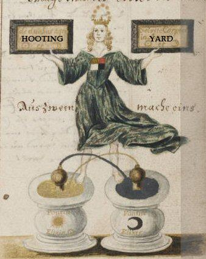

Friday, February the 27th, 2009
back to: title, date or indexes
Last week, Mrs Gubbins suffered some sort of mental collapse and called in a team of consultants to overhaul the Hooting Yard “brand image”. The octogenarian crone put aside her knitting and got it into her head that what was needed was a brand new logo. “It has to be punchy and zippy and bangy and crashy,” she drivelled, adding that she wanted something that a half-blind orphan child could reproduce with a crumbling crayon. I have no idea how much the consultants charged for their work, but knowing these charlatans it was probably thousands and thousands of pounds. When the invoice turns up I shall cast it into a waste disposal chute. Anyway, here is the new logo, based I am told on an illustration from an alchemical treatise of long, long ago.
